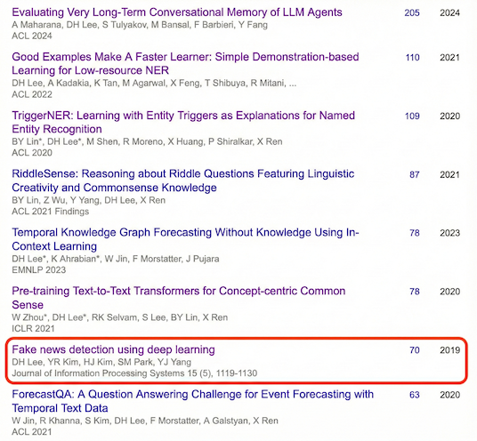
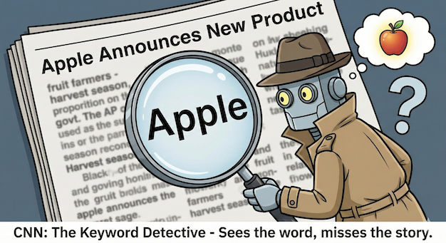
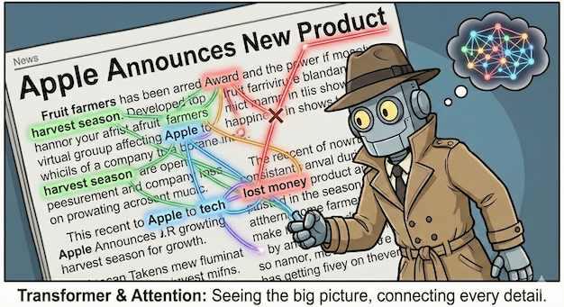

Is the Headline Lying to You?
Teaching AI to Read Between the Lines
The Problem: When Headlines Trick You
Imagine scrolling through Facebook and seeing: “Harry Potter Author Holding a Signing Event!” You click it, but the article is about a celebrity’s haircut. You’ve been fooled by clickbait.
This happens millions of times daily. In 2019, my team built an AI to catch fake headlines. It worked well for obvious fakes but had one weakness: it couldn’t tell when a headline simply didn’t match the story.
How Our Old AI Worked: The Keyword Detective
Back in 2019, we used CNNs (Convolutional Neural Networks). Think of it like a detective with a magnifying glass looking for clues.
The AI would read the headline “Apple Announces New Product,” then search the article for the word “Apple.” If it found “Orange” instead, it would flag it as fake.
This worked for simple lies. But smart writers learned to trick it by using the same word with different meanings:
- Headline: “Apple Breaks Sales Record”
- Article: About apple farmers selling fruit
Same word, completely different meaning. Our AI got confused half the time. Its accuracy was 52%—basically a coin flip.
Behind the Numbers: Our 2019 Research
Our team published this research in the Journal of Information Processing Systems in October 2019, focusing specifically on Korean-language fake news detection. Thesis link 
The Challenge: Korean Language Complexity
Korean presented unique difficulties that made traditional approaches fail:
- Shorter sentences, denser meaning: Korean can express concepts in fewer words than English, making feature extraction harder for CNNs
- Morpheme ambiguity: The same word can have completely different meanings based on context
- Agglutinative structure: Korean combines morphemes in ways that confuse simple keyword matching
What We Built
We developed a CNN-based architecture called BCNN (Bi-CNN) that processed headlines and article bodies separately using: - Fasttext word embeddings trained on 100K Korean articles - Shallow-and-wide CNN with multiple filter widths (3-gram convolutions) - 256 filters for headlines, 1024 filters for bodies (proportional to text length)
The Results That Surprised Us
Testing on 12,836 Korean news articles revealed a stark pattern:
| Fake News Type | Accuracy |
|---|---|
| Completely fabricated (obvious fakes) | ~94% |
| Semantic mismatch (Apple company vs. fruit) | 52% |
| Body-headline discrepancy | ~60% |
The 52% accuracy on semantic mismatches was essentially random guessing. Our model could catch obvious lies but failed at subtle manipulation—exactly where human fact-checkers struggle most.
Why It Failed
The CNN architecture had a fundamental limitation: it looked at text through a narrow window (3-5 words at a time). When processing the headline “Apple breaks sales record,” it couldn’t distinguish whether the article discussed: - Apple Inc.’s quarterly earnings - Korean apple farmers’ harvest yields
Both articles would contain the keyword “Apple,” passing our detector’s checks while completely misleading readers.
This limitation wasn’t unique to Korean—it revealed a universal problem with keyword-based approaches that would require a fundamentally different architecture to solve. 
The Modern Solution: Teaching AI to Pay Attention
Today, we use something more powerful called a Transformer, the same technology behind ChatGPT.
- Old AI (2019): Reading with a magnifying glass, three words at a time.
- New AI (2024): Seeing the entire page at once, with colored strings connecting related ideas.
The magic is “Attention.” When the new AI reads a headline, it doesn’t just look for matching keywords. Instead, it:
- Reads the entire headline
- Reads the entire article
- Connects every word in the headline to every sentence in the article
- Checks if the logic flows
If the headline says “Company Wins Award,” the AI doesn’t just look for the word “award.” It checks if the article actually describes winning, or if it secretly describes losing money.

What’s Next: Validating the Evolution
From Korean-Only to Universal Benchmark
Our 2019 research faced a critical limitation: we had to manually collect and label 12,836 Korean news articles. This made our results hard to compare with other research and difficult for others to reproduce.
Now, we’re planning to validate both approaches on the Fake News Challenge (FNC-1) dataset—a public benchmark with 50,000 English headline-body pairs used by researchers worldwide. Fake News Challenge Dataset
The Experiment Plan
Goal: Directly compare 2019 CNN architecture vs. 2024 Transformer architecture on identical data
Why FNC-1? - Public dataset anyone can reproduce - English language removes Korean-specific complications - Established baselines from 100+ research teams - Four-way classification (Agree/Disagree/Discuss/Unrelated) tests nuanced understanding
What We’ll Test:
- 2019 Approach (CNN + Fasttext)
- Replicate our original architecture
- Strength: Fast inference, low compute
- Weakness: Misses semantic contradictions
- 2024 Approach (Transformer-based)
- Fine-tune BERT/RoBERTa models
- Strength: Catches subtle logical inconsistencies
- Weakness: Requires more computational resources
- Error Analysis
- Identify specific cases where CNN fails but Transformers succeed
- Visualize attention patterns showing why Transformers understand context better
- Quantify the gap in detecting semantic mismatches
Why This Matters
Back in 2019, proving our approach required months of data collection and labeling. Today, using public benchmarks means:
- Reproducibility: Other researchers can verify our claims
- Fair comparison: Same data, same metrics, clear winner
- Practical insights: Real numbers to guide deployment decisions
We’re planning to open-source our implementation and publish detailed results. The goal isn’t just to show that newer is better—it’s to demonstrate exactly how much better and in which scenarios the improvement matters most.
The New Superpower: AI That Explains Itself
We’re not just making AI smarter—we’re making it helpful.
Old systems gave you a score: “This article is 90% fake.” Not very useful.
Modern AI using Large Language Models can explain its thinking:
“The headline claims the company won an award, but paragraph three shows they actually lost money this quarter.”
Now you don’t just know something is fake—you understand why it’s fake and learn to spot tricks yourself.
From Pattern Matching to Logical Thinking
The journey from 2019 to 2024 is about moving from simple pattern matching to actual logical understanding.
Our old AI memorized answers without understanding questions. It passed easy tests but failed when things got tricky.
Our new AI actually understands the material. It handles complex questions because it knows how to think, not just what to look for.
The Goal: A Digital World You Can Trust
We’re building toward a future where:
- Every suspicious headline gets checked instantly
- You get clear explanations instead of warning labels
- Fake news loses its power because nobody falls for it
It’s not about replacing human judgment. It’s about giving you a smart assistant that helps you see through the tricks. One headline at a time, we’re making the internet a place where you can trust what you read.
This post is based on research in fake news detection using deep learning, exploring the evolution from CNN-based approaches to modern Transformer architectures.